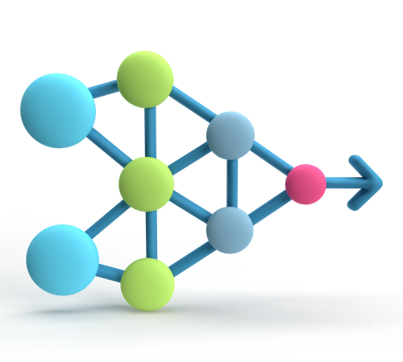

AI Info
I
am familiar with NumPy, Pandas, Matplotlib, and Scikit Learn for manipulating, visualizing, and training models on raw data.
I have used the following algorithms for producing AI agents:
- - A star
- - Stochastic Adversarial Search
- - Logistic Regression
- - Reinforcement learning via sampling, Q-learning, & Neural Networks
